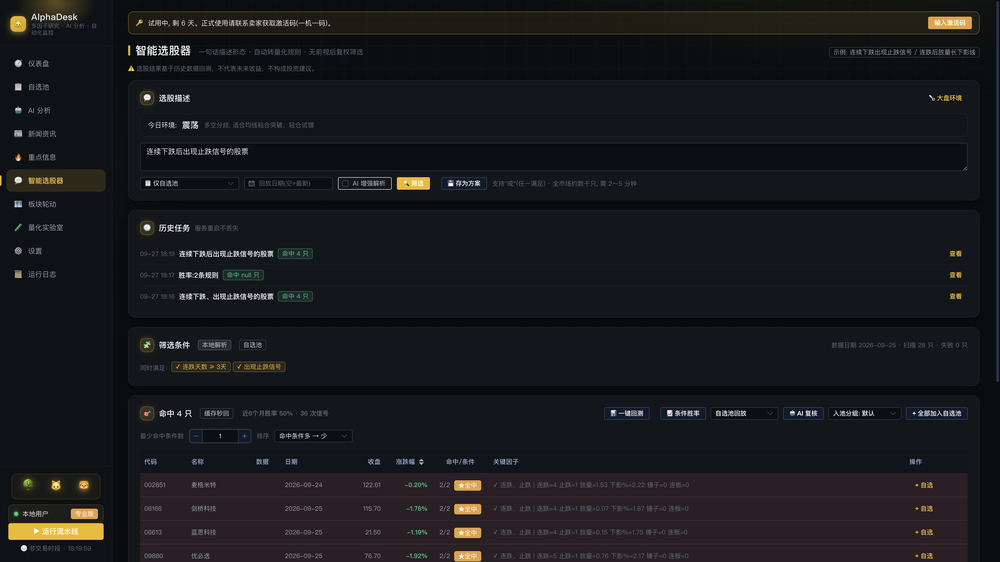
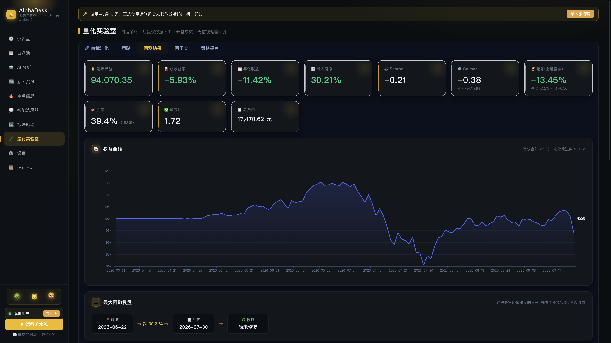

核心功能
十大模块，覆盖从选股到验证、资金面再到持仓的全链路。
📊 仪表盘 日常总览
自选池一屏总览：实时价格、涨跌幅、算法评分、信号、共舞度、AI 摘要，外加涨跌分布与最新重点信息（公告/新闻/异动）。
💬 智能选股器 自然语言
用中文描述你想要的形态，系统自动翻译成量化条件并全市场扫描：
- "连续下跌、出现止跌信号的股票"
- "连跌后放量长下影线"
- "超卖金叉的股票"
支持"或"逻辑、历史日期回放、一键回测、条件胜率统计、AI 复核、命中入池。

🔬 量化实验室 策略端
自编策略 + 严谨回测：
- 60+ 因子任意组合，支持区间/上穿/下穿判定
- 逐只模式 / 组合模式（槽位资金管理）
- 滚动窗口样本外检验（Walk-Forward）
- 收益归因、月度收益、最大回撤复盘、卡玛比率
- 一键样本内外切分（前 70% 调参 / 后 30% 验证）

🧬 AI 自我进化
- AI 提候选 → 回测验证 → 淘汰迭代
- 样本外门控：验证段不达标无育种资格
- 漏斗评估：先粗筛后精评，省时省算力
- 冠军一键采用为正式策略
🧪 因子 IC 分析
- 因子值 vs 未来 20 日收益的截面秩相关
- 稳定性(IR) 与方向一致性双指标判定
- 告诉你哪些因子在当下市场还有效
💰 资金面分析 v1.0.2
- 主力/超大/大/中/小单净流入逐日拆解
- 5/10/20 日累计 + 连续净流入天数
- 0-100 资金评分与结构判读（吸筹/派发）
- 失败静默降级，不影响核心功能
💼 模拟持仓 v1.0.1
- 手动记录买入价/数量，每日盯盈亏
- 现价/市值/盈亏率自动计算
- 模拟盘，不连券商，只做跟踪
🔥 重点信息
- 公告智能分类：减持/立案/ST/分红/业绩
- 收盘自动扫自选池事件，异常即推
- 选股方案命中增量推送（只推新增）
📈 板块轮动
- 行业/概念动量热力，近 5/20 日涨幅
- 主力净流入 + 20 日均线上下分布
- 点击板块看成分股
🅰️ 阿罗 · 操作助手 v1.0.3

- 右下角悬浮窗，说人话就能办事：加自选、查评分、看资金面
- 大模型多轮决策：比较两只股票、综合解读，一次问完
- 删自选/补跑等不可逆动作，先弹确认卡，点了才执行
- 收盘后主动推送：今晚几条新消息、命中几只
- 无 Key 也能用 8 类固定指令；配 Key（DeepSeek）后全量理解
📺 K线大屏 v1.0.3
- 自选股近 90 日 K 线一屏尽览，红涨绿跌
- 均线 / BOLL / 成交量 / MACD 一键叠加
- 点卡片直达个股详情（评分+资金面+AI）
🧠 AI 分析
- 个股多维评分 + 结构化结论
- 技术面无前视（只用当日及之前数据）
- 可配置自有 API 密钥
📰 新闻与运行日志
- 个股新闻聚合
- 流水线执行日志（按天轮转，保留 14 天）
- 数据健康检查，异常自动告警